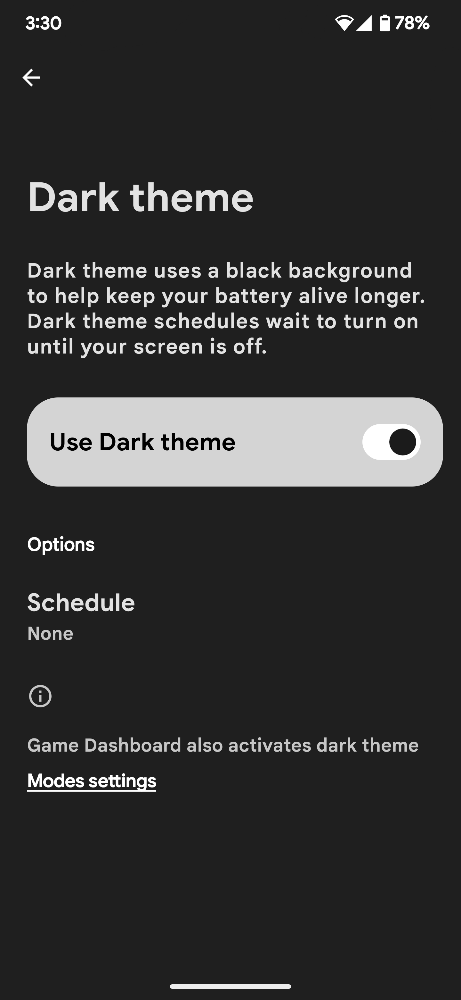
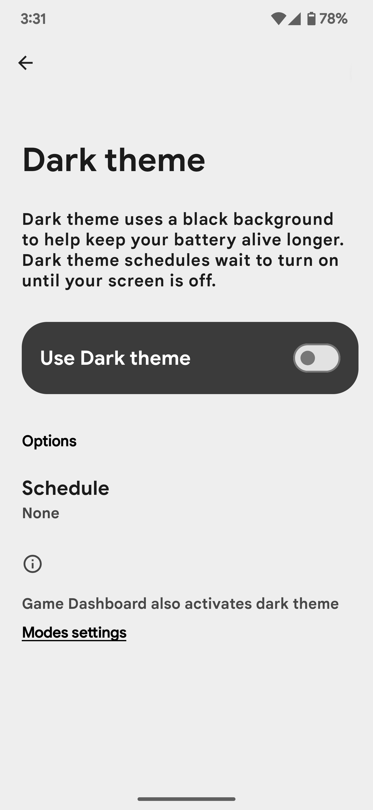
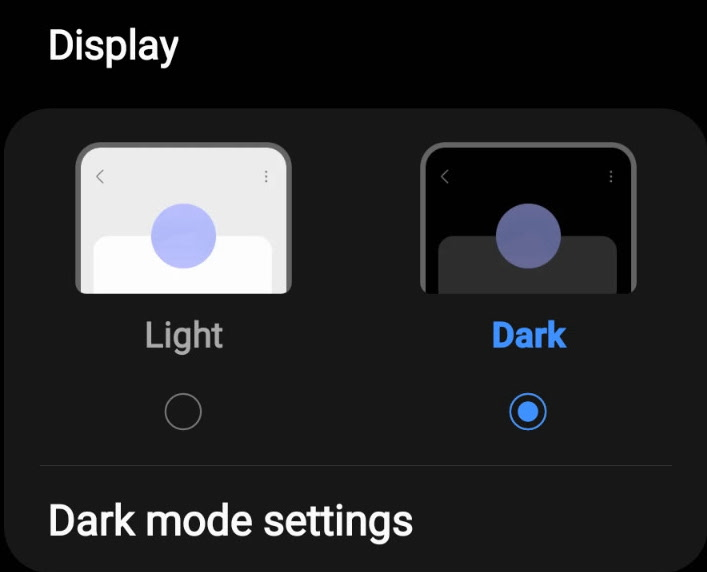
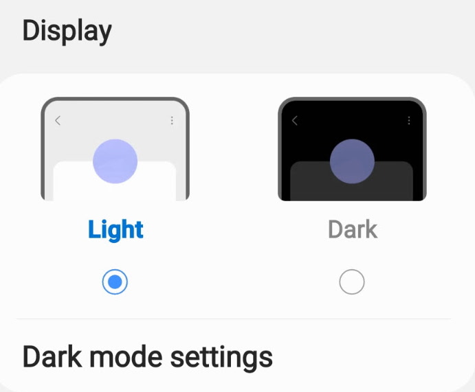
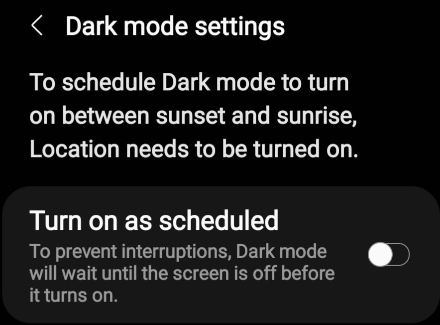
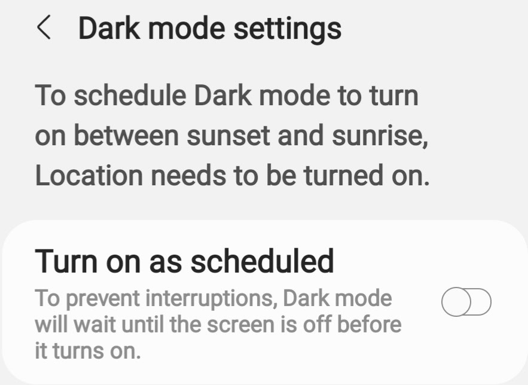
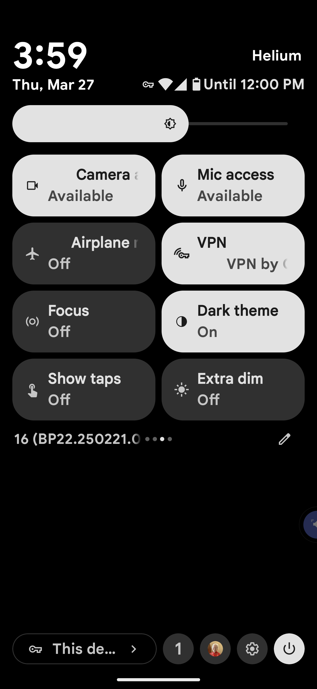
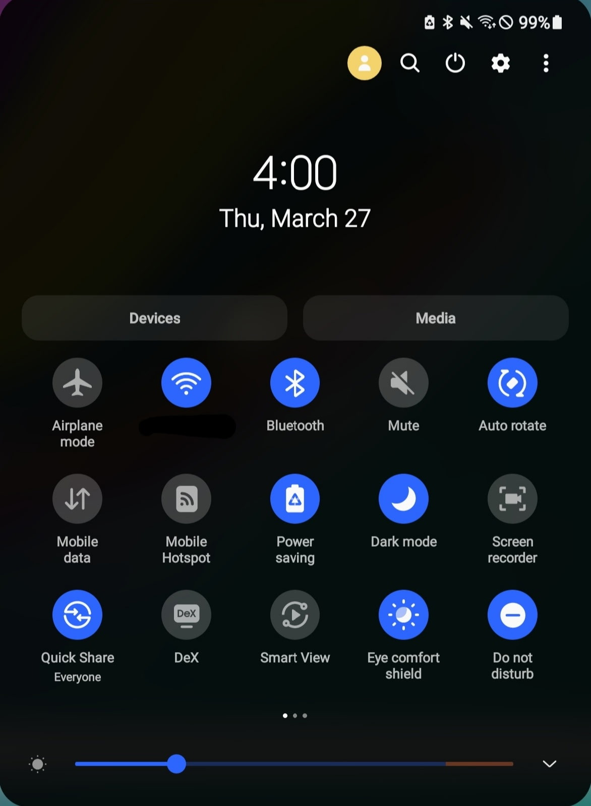
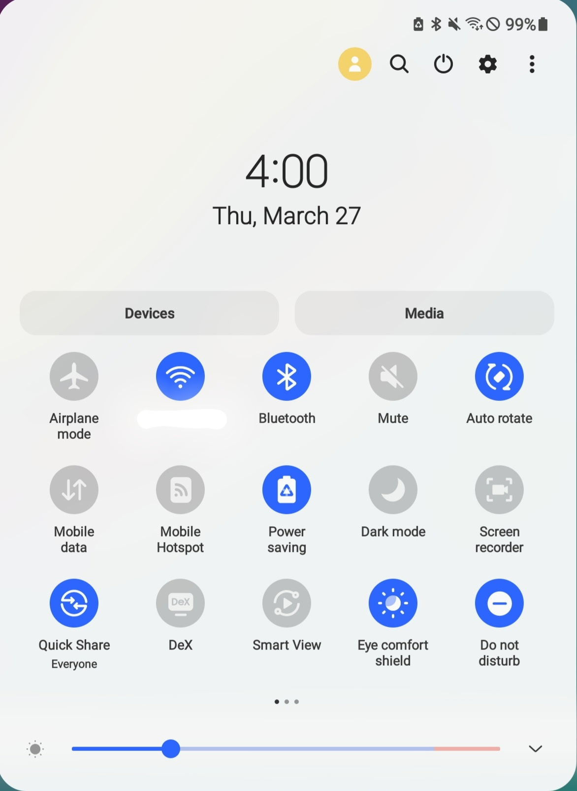

Dark Theme for Android
Darken the theme of your display for easier viewing in low-light enviroments or for higher contrast on your Android device.
Turn on Dark Theme in Settings
Learn how to enable Dark Theme on your Android device in settings.
Google Pixel
- Open Settings
- Tap Display
- Enable Dark Theme


Samsung Galaxy
- Open Settings
- Tap Display
- Tap Dark


Setup a Schedule
You can setup Dark Theme to automatically enable at a certain time of the day and disable at another time.
Google Pixel
- Open Settings
- Tap Display
- Tap Dark Theme
- Tap Schedule, the choose Sunset to Sunrise or a Custom Time.
- If you choose Custom Time, the Start and End times will appear where you can set the time frame for Dark Mode to enable.
Samsung Galaxy
- Open Settings
- Tap Display
- Tap Dark Mode Settings


Toggle Dark Theme in the Quick Settings Panel
If you frequently switch between light and dark theme on your device, you can add the Dark Theme or Dark Mode button to your Quick Settings panel for convenient access.
Google Pixel
- Swipe down with two fingers from the top of the screen to open the Quick Settings panel
- Tap the Edit button in the bottom right of the panel below the buttons.
- Find Dark Theme, then drag it into the Quick Settings panel
- Tap the back button to save your changes.
- Tap Dark Theme to toggle it on and off.

Samsung Galaxy
- Swipe down with two fingers from the top of the screen to open the Quick Settings panel
- Open the More Options button in the top right corner of the screen.
- Tap the Edit buttons
- Find Dark Theme, then drag it into the Quick Settings panel
- Tap Done to save your changes.
- Tap Dark Theme to toggle it on and off.

